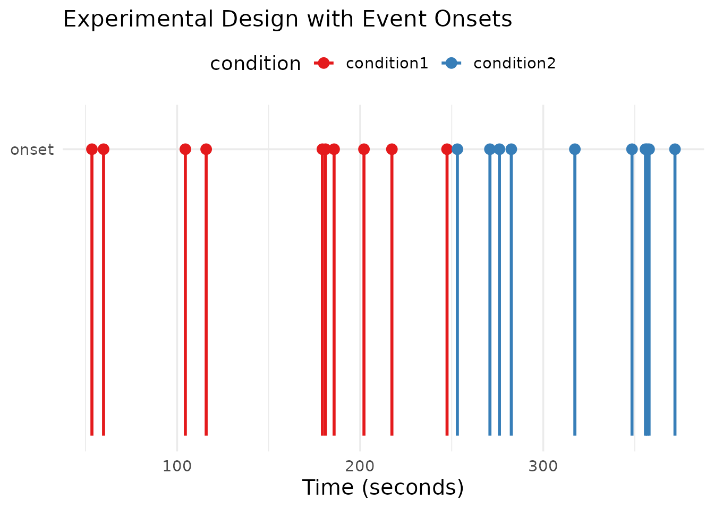
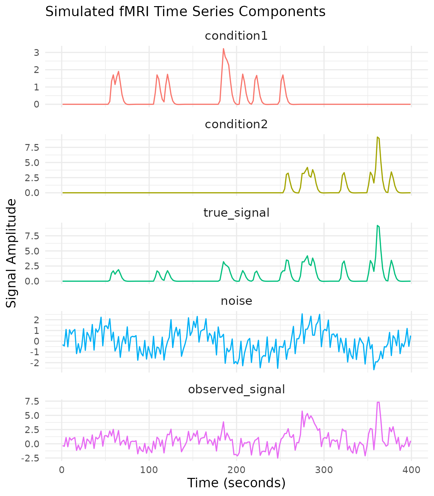
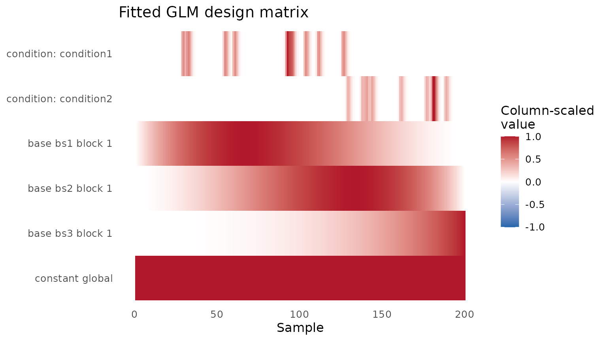
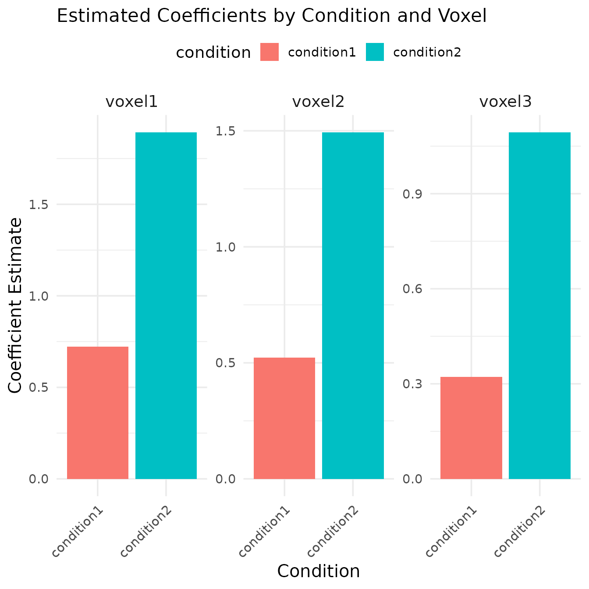
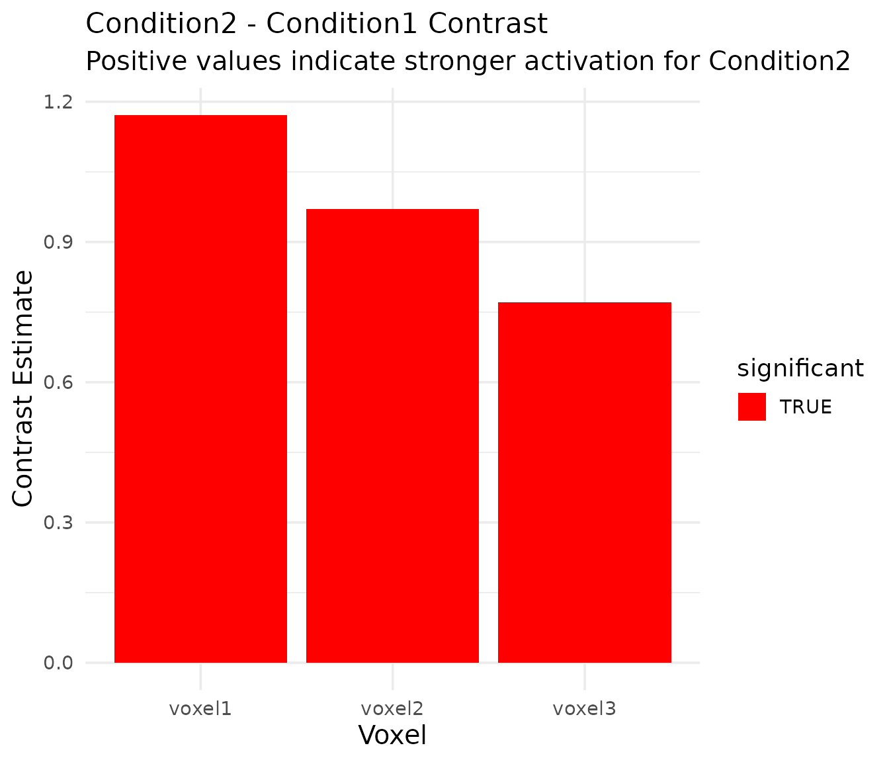
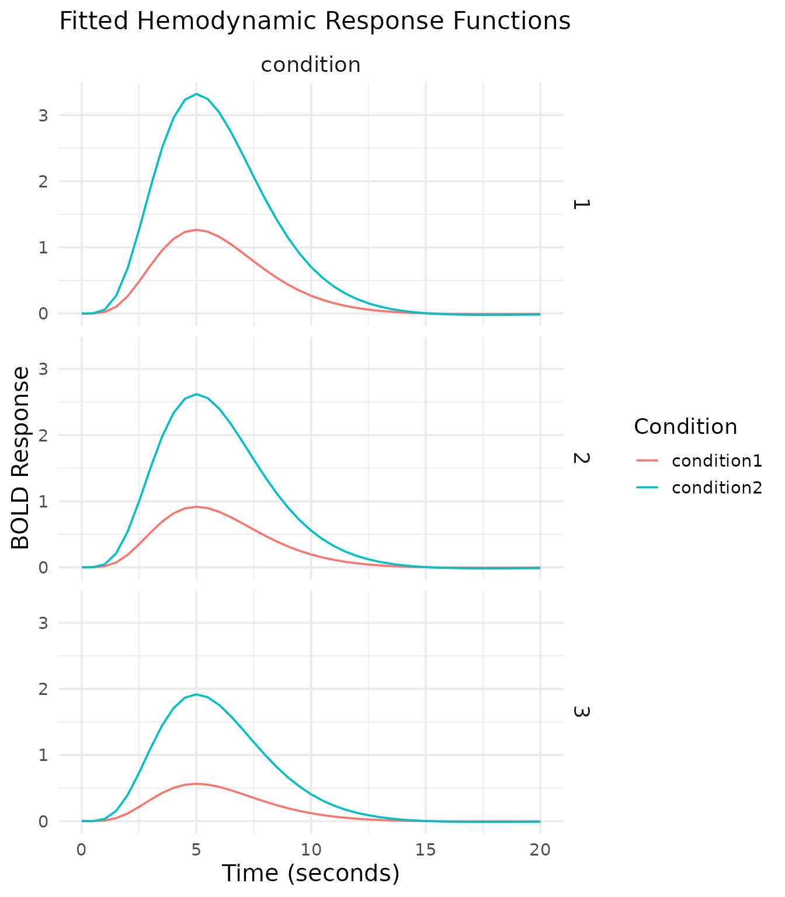
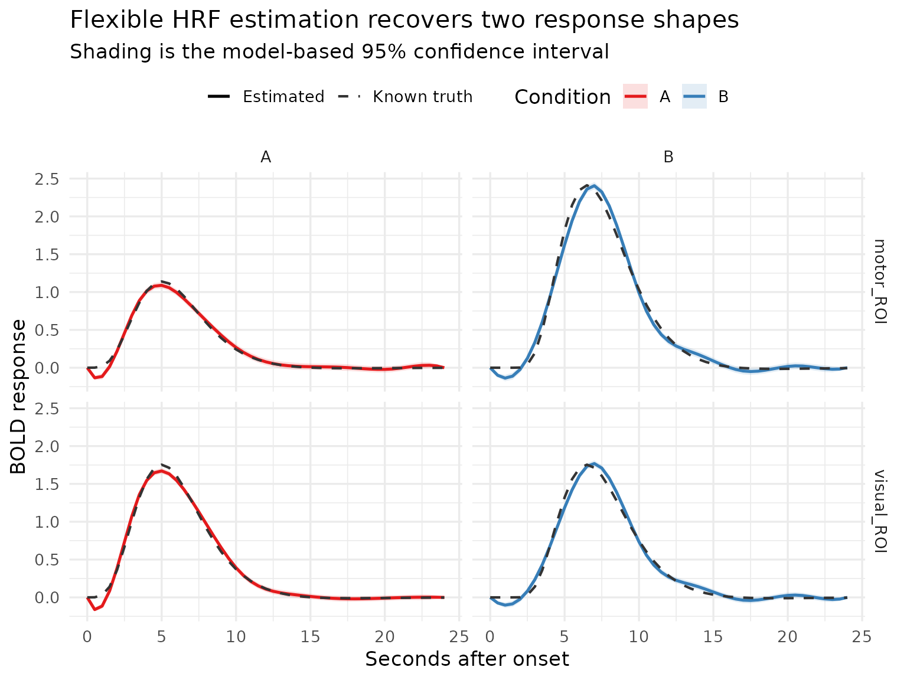
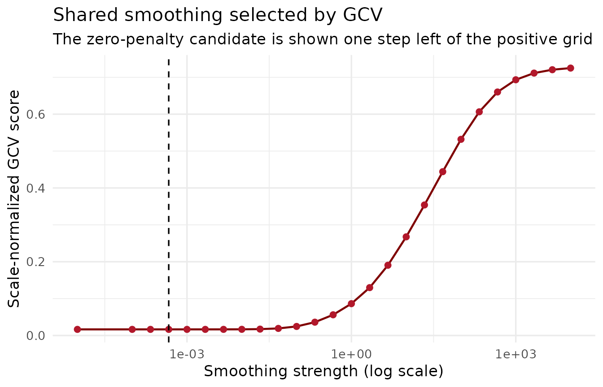
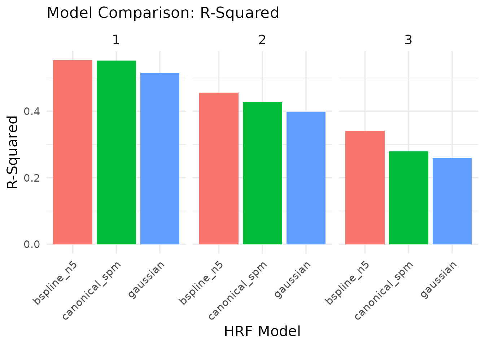
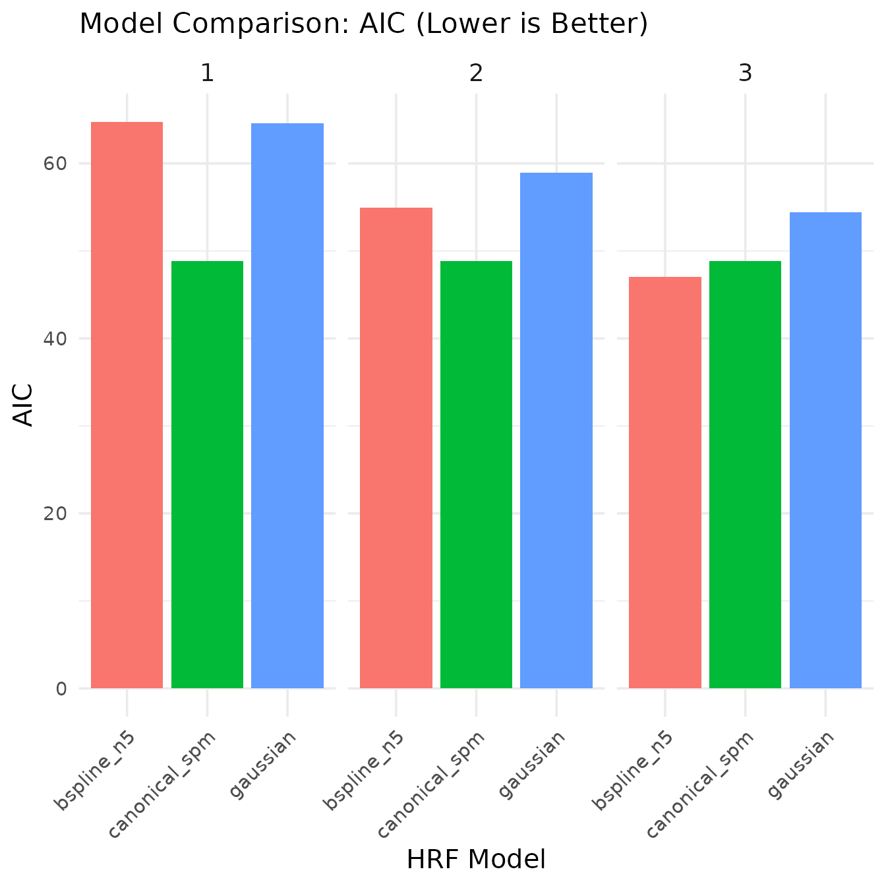

fMRI Linear Model (GLM)
Bradley R. Buchsbaum
2026-08-22
Source:vignettes/a_09_linear_model.Rmd
a_09_linear_model.RmdIntroduction to fMRI Linear Models
Statistical analysis of fMRI data typically involves fitting a linear
model to each voxel’s time series. This approach, often called the
General Linear Model (GLM), estimates how much each experimental
condition contributes to the observed signal. The fmrireg
package provides a flexible framework for:
- Modeling the hemodynamic response to experimental stimuli
- Accounting for baseline trends and noise
- Estimating condition-specific effects
- Computing contrasts between conditions
- Testing statistical hypotheses about brain activity
Thread usage in internal routines can be adjusted globally. Set
options(fmrireg.num_threads = <n>) or the environment
variable FMRIREG_NUM_THREADS before loading the package to
control how many threads RcppParallel uses.
This vignette demonstrates how to conduct a complete linear model
analysis using the fmrireg package, from data simulation to
statistical inference.
Simulating a Dataset for Analysis
First, let’s create a controlled fMRI teaching dataset with known parameters. We’ll simulate a simple experiment with two conditions that have different amplitudes.
# Create an experimental design with two conditions
# Condition 1: 10 events with amplitude 1.0
# Condition 2: 10 events with amplitude 2.0
# Define parameters
TR <- 2 # Repetition time (2 seconds)
run_length <- 200 # 200 timepoints per run = 400 seconds
nruns <- 1 # Number of runs
# Create an event table
run_id <- rep(1, 20)
condition <- factor(rep(c("condition1", "condition2"), each = 10))
onset_times <- sort(runif(20, min = 10, max = 380)) # Random onsets between 10s and 380s
event_table <- data.frame(
run = run_id,
onset = onset_times,
condition = condition
)
# Display the experiment design
kable(head(event_table), caption = "First few rows of the experimental design")| run | onset | condition |
|---|---|---|
| 1 | 53.47032 | condition1 |
| 1 | 59.82664 | condition1 |
| 1 | 104.50866 | condition1 |
| 1 | 115.87163 | condition1 |
| 1 | 179.36446 | condition1 |
| 1 | 181.04834 | condition1 |
# Create a sampling frame
sframe <- sampling_frame(blocklens = run_length, TR = TR)
# Plot event onsets without drawing a dense row of zero-valued samples.
ggplot(event_table, aes(x = onset, y = 1, color = condition)) +
geom_segment(aes(xend = onset, y = 0, yend = 1), linewidth = 1) +
geom_point(size = 3) +
theme_minimal(base_size = 14) +
theme(legend.position = "top",
text = element_text(size = 14),
axis.title = element_text(size = 15),
plot.title = element_text(size = 16)) +
labs(title = "Experimental Design with Event Onsets",
x = "Time (seconds)",
y = NULL) +
scale_y_continuous(breaks = 1, labels = "onset", limits = c(0, 1.1)) +
scale_color_brewer(palette = "Set1")
Now that we have our experimental design, let’s simulate the fMRI time series. We’ll create signals for each condition with different amplitudes, add noise, and combine them into a dataset.
# Simulate the true BOLD signals for each condition
# First, convert our events to global indices
global_onsets <- global_onsets(sframe, event_table$onset, blockids(sframe)[event_table$run])
# Create regressors for each condition
condition1_indices <- which(event_table$condition == "condition1")
condition2_indices <- which(event_table$condition == "condition2")
reg1 <- regressor(global_onsets[condition1_indices], hrf = fmrihrf::HRF_SPMG1, amplitude = 1.0)
reg2 <- regressor(global_onsets[condition2_indices], hrf = fmrihrf::HRF_SPMG1, amplitude = 2.0)
# Sample time points
time_points <- samples(sframe, global = TRUE)
# Evaluate regressors at each time point
signal1 <- evaluate(reg1, time_points)
signal2 <- evaluate(reg2, time_points)
# Combine signals (this is the "true" signal without noise)
true_signal <- signal1 + signal2
# Create noise with temporal autocorrelation and drift
noise <- simulate_noise_vector(
n = length(time_points),
TR = TR,
ar = c(0.7), # Stronger AR(1) coefficient to accentuate autocorrelation
ma = numeric(0), # Pure AR structure keeps the example simple
drift_freq = 1/128, # Slow drift
drift_amplitude = 1, # Moderate drift amplitude
physio = TRUE, # Include physiological noise
sd = 0.5 # Noise standard deviation
)
# Create the observed signal by adding noise
observed_signal <- true_signal + noise
# Create a data frame for visualization
signal_df <- data.frame(
time = time_points,
true_signal = true_signal,
noise = noise,
observed_signal = observed_signal,
condition1 = signal1,
condition2 = signal2
)
# Create a matrix dataset for the model fitting. A shared noise realization
# keeps the example focused on the known change in signal amplitude.
voxel_scales <- c(1.0, 0.8, 0.6)
simulated_data <- vapply(
voxel_scales,
function(scale) scale * true_signal + noise,
numeric(length(true_signal))
)
dataset <- fmridataset::matrix_dataset(
datamat = simulated_data,
TR = TR,
run_length = run_length,
event_table = event_table
)
# Visualize the signals
signal_long <- signal_df %>%
select(time, condition1, condition2, true_signal, noise, observed_signal) %>%
pivot_longer(cols = -time, names_to = "component", values_to = "signal")
# Set the factor levels for better plotting order
signal_long$component <- factor(signal_long$component,
levels = c("condition1", "condition2", "true_signal", "noise", "observed_signal"))
# Plot signals
ggplot(signal_long, aes(x = time, y = signal, color = component)) +
geom_line() +
facet_wrap(~component, ncol = 1, scales = "free_y") +
theme_minimal(base_size = 14) +
theme(legend.position = "none",
text = element_text(size = 14),
axis.title = element_text(size = 15),
plot.title = element_text(size = 16),
strip.text = element_text(size = 14)) +
labs(title = "Simulated fMRI Time Series Components",
x = "Time (seconds)",
y = "Signal Amplitude")
Our simulated dataset now contains:
- Condition-specific signals with known amplitudes (1.0 and 2.0)
- Structured teaching noise with temporal autocorrelation, drift, and physiological components
- Three teaching voxels with known signal scales and a shared noise realization
- A complete event table with condition labels and onset times
Fitting a Linear Model
Now we can fit a linear model to our simulated data using the
fmri_lm function. We need to specify:
- The formula describing the experimental effects
- The block structure of the data
- The dataset
# Fit the central model with the AR(1) structure used by the generator.
model <- fmri_lm(
formula = onset ~ hrf(condition), # Model experimental effects
block = ~ run, # Block structure
dataset = dataset, # Our simulated dataset
control = fmri_lm_control(noise = noise_spec("ar1")),
compute = compute_spec(voxel_chunks = 1L)
)
# Print a summary of the model
model
#>
#> ==================================
#> fmri_lm_result
#> ==================================
#>
#> Model formula:
#> ~ onset hrf(condition)
#>
#> Fitting strategy: chunkwise
#>
#> Baseline parameters: 4
#> Design parameters: 2
#> Contrasts: None
#>
#> Use coef(...), stats(...), etc. to extract results.
#>
#> The onset plot above shows the schedule; the matrix actually fitted by the GLM also includes the sampled HRF regressors and baseline columns. Inspect that matrix before interpreting coefficients, especially when designs are larger or contain nuisance regressors.
fitted_design <- as.matrix(design_matrix(model$model))
design_denom <- pmax(apply(abs(fitted_design), 2, max), .Machine$double.eps)
design_scaled <- sweep(fitted_design, 2, design_denom, "/")
design_labels <- colnames(design_scaled)
design_labels <- sub("^condition_condition\\.", "condition: ", design_labels)
design_labels <- gsub("_", " ", design_labels, fixed = TRUE)
colnames(design_scaled) <- design_labels
design_plot_data <- as.data.frame(design_scaled, check.names = FALSE) %>%
mutate(sample = row_number()) %>%
pivot_longer(-sample, names_to = "regressor", values_to = "scaled_value") %>%
mutate(regressor = factor(regressor, levels = rev(design_labels)))
ggplot(design_plot_data, aes(sample, regressor, fill = scaled_value)) +
geom_tile() +
scale_fill_gradient2(
low = "#2166AC", mid = "white", high = "#B2182B",
limits = c(-1, 1), name = "Column-scaled\nvalue"
) +
labs(title = "Fitted GLM design matrix", x = "Sample", y = NULL) +
theme_minimal(base_size = 12) +
theme(panel.grid = element_blank())
Accounting for Temporal Autocorrelation
The simulated noise contains AR(1) structure, so the central model
above uses AR(1) prewhitening with noise_spec("ar1"). By
default, the built-in shared path pools residual autocovariances across
voxels, estimates one AR coefficient vector for each run, whitens the
data and design matrix, and refits the GLM. This targets a typical voxel
covariance. The experimental
shared_estimator = "mean_series" option instead averages
voxel residuals at each time point and targets the spatially coherent
component, which can be much more autocorrelated than an individual
voxel.
To estimate a separate AR model for every voxel, request the supported runwise-meta path explicitly:
voxelwise_control <- fmri_lm_control(
estimation = estimation_spec("runwise_meta"),
noise = noise_spec("ar1", voxelwise = TRUE)
)Built-in voxelwise estimation currently supports AR-only models with run pooling, one GLS iteration, no censoring, and no volume weighting or soft-subspace projection. Robust fitting is supported, but robust AR re-estimation is not. Unsupported combinations fail at the fitting boundary instead of silently using the shared estimator.
Prewhitening changes both the coefficient covariance and the effective information in the time series. It is therefore important to inspect the result rather than assume that correction must make standard errors smaller.
model_ols <- fmri_lm(
formula = onset ~ hrf(condition),
block = ~ run,
dataset = dataset,
compute = compute_spec(voxel_chunks = 1L)
)
model_ar1 <- model
se_ols <- standard_error(model_ols)
se_ar1 <- standard_error(model_ar1)
se_comparison <- data.frame(
model = c("OLS", "AR(1) prewhitened"),
median_event_se = c(median(as.matrix(se_ols)), median(as.matrix(se_ar1)))
)
kable(se_comparison, digits = 4, caption = "Median standard error across event coefficients")| model | median_event_se |
|---|---|
| OLS | 0.1377 |
| AR(1) prewhitened | 0.1719 |
# Inspect the estimated AR coefficient (shared across voxels in this example)
model_ar1$ar_coef[[1]]
#> [1] 0.3089859Here the AR(1) fit estimates non-zero serial dependence and produces larger standard errors than plain OLS. The practical lesson is not that prewhitening always increases uncertainty, but that OLS can be overconfident when residuals are serially correlated.
The noise_spec() constructor also accepts
struct = "arp" for higher-order autoregressive models. A
positive q requests ARMA(p, q) inference on the supported
runwise-meta path; see ?noise_spec for the current
restrictions.
Handling Outliers with Row-Wise Robust Fitting
Real fMRI runs sometimes contain entire time points corrupted by
motion or scanner artifacts. The fmri_lm function can
mitigate their impact by enabling row-wise robust weighting: an
Iteratively Reweighted Least Squares loop down-weights frames with large
residuals. Select the weighting function and its iteration limit once
with robust_spec().
model_robust <- fmri_lm(
formula = onset ~ hrf(condition),
block = ~ run,
dataset = dataset,
control = fmri_lm_control(
robust = robust_spec("huber", max_iter = 2L)
),
compute = compute_spec(voxel_chunks = 1L)
)
se_robust <- standard_error(model_robust)
robust_comparison <- data.frame(
model = c("OLS", "Huber"),
median_event_se = c(median(as.matrix(se_ols)), median(as.matrix(se_robust)))
)
kable(robust_comparison, digits = 4, caption = "Median event-coefficient standard error")| model | median_event_se |
|---|---|
| OLS | 0.1377 |
| Huber | 0.1297 |
Robust fitting guards against frames with multivariate residual excursions; it does not specifically target a spike confined to one voxel. In this realization Huber fitting modestly decreases the reported standard errors. That direction is data-dependent, not a general guarantee. Robust p-values use a robust residual scale and should be interpreted as approximate.
Extracting Model Results
Let’s extract and visualize the results from our linear model.
1. Coefficient Estimates
# Extract coefficient estimates
beta_estimates <- coef(model)
kable(beta_estimates, caption = "Coefficient estimates for each condition and voxel")| condition_condition.condition1 | 0.7220765 | 0.5222495 | 0.3224225 |
| condition_condition.condition2 | 1.8931877 | 1.4934382 | 1.0936888 |
# Reshape for plotting (works with both approaches)
beta_long <- as.data.frame(t(beta_estimates)) %>%
mutate(voxel_index = row_number()) %>%
pivot_longer(cols = -voxel_index, names_to = "condition", values_to = "estimate") %>%
mutate(
condition = clean_condition_label(condition),
voxel = paste0("voxel", voxel_index)
)
# Plot coefficient estimates
ggplot(beta_long, aes(x = condition, y = estimate, fill = condition)) +
geom_bar(stat = "identity") +
facet_wrap(~voxel, ncol = 3, scales = "free_y") +
theme_minimal(base_size = 14) +
theme(legend.position = "top",
text = element_text(size = 14),
axis.title = element_text(size = 15),
plot.title = element_text(size = 16),
strip.text = element_text(size = 14),
axis.text.x = element_text(angle = 45, hjust = 1)) +
labs(title = "Estimated Coefficients by Condition and Voxel",
x = "Condition",
y = "Coefficient Estimate")
The generator assigns Condition2 twice the underlying amplitude of Condition1 and scales the three voxels by 1.0, 0.8, and 0.6. Finite noisy estimates need not preserve either ratio exactly. The plot should therefore be read together with the uncertainty table below; the scientifically relevant checks are the direction and uncertainty of the planned contrast, not visual agreement with an exact 2:1 ratio.
2. T-Statistics and P-Values
estimate_stats <- tidy(model, type = "estimates") %>%
filter(grepl("condition", term)) %>%
mutate(condition = clean_condition_label(term),
voxel = paste0("voxel", voxel)) %>%
select(voxel, condition, estimate, std_error, statistic, p_value)
estimate_stats_display <- estimate_stats %>%
mutate(p_value = format.pval(p_value, digits = 4, eps = 1e-4))
kable(estimate_stats_display, digits = 4, row.names = FALSE,
caption = "Coefficient estimates with associated statistics by voxel and condition")| voxel | condition | estimate | std_error | statistic | p_value |
|---|---|---|---|---|---|
| voxel1 | condition1 | 0.7221 | 0.1804 | 4.0037 | < 1e-04 |
| voxel1 | condition2 | 1.8932 | 0.1634 | 11.5885 | < 1e-04 |
| voxel2 | condition1 | 0.5222 | 0.1803 | 2.8958 | 0.004216 |
| voxel2 | condition2 | 1.4934 | 0.1634 | 9.1417 | < 1e-04 |
| voxel3 | condition1 | 0.3224 | 0.1803 | 1.7878 | 0.075369 |
| voxel3 | condition2 | 1.0937 | 0.1634 | 6.6948 | < 1e-04 |
The t-statistics quantify the reliability of the estimated effects. Higher absolute t-values indicate more precise estimates relative to their standard errors. Here 5 of the six condition-by-voxel tests are below 0.05. The weakest simulated signal is correspondingly the least certain; this is why the table reports both effect size and uncertainty rather than reducing the result to a binary label.
3. Contrasts Between Conditions
A key advantage of the GLM approach is the ability to directly compare conditions using contrasts.
# Define a contrast specification for comparing condition2 vs condition1
con_spec <- pair_contrast(~ condition == "condition2", ~ condition == "condition1", name = "cond2_minus_cond1")
# Define a contrast model using the specified contrast in hrf()
contrast_model <- fmri_lm(
formula = onset ~ hrf(condition, contrasts = con_spec),
block = ~ run,
dataset = dataset,
control = fmri_lm_control(noise = noise_spec("ar1")),
compute = compute_spec(voxel_chunks = 1L)
)
# Extract contrast results using tidy helper
contrast_results <- tidy(contrast_model, type = "contrasts") %>%
filter(term == "cond2_minus_cond1") %>%
mutate(
voxel = paste0("voxel", voxel),
significant = p_value < 0.05
)
# Display contrast results
contrast_results_display <- contrast_results %>%
mutate(p_value = format.pval(p_value, digits = 4, eps = 1e-4))
kable(contrast_results_display,
caption = "Contrast results: condition2 - condition1",
digits = 4, row.names = FALSE)| voxel | term | estimate | std_error | statistic | p_value | df_inference | df_residual | significant |
|---|---|---|---|---|---|---|---|---|
| voxel1 | cond2_minus_cond1 | 1.1711 | 0.2386 | 4.9077 | < 1e-04 | 194 | 194 | TRUE |
| voxel2 | cond2_minus_cond1 | 0.9712 | 0.2386 | 4.0700 | < 1e-04 | 194 | 194 | TRUE |
| voxel3 | cond2_minus_cond1 | 0.7713 | 0.2386 | 3.2322 | 0.001443 | 194 | 194 | TRUE |
# Visualize the contrast
ggplot(contrast_results, aes(x = as.factor(voxel), y = estimate, fill = significant)) +
geom_bar(stat = "identity") +
theme_minimal(base_size = 14) +
theme(text = element_text(size = 14),
axis.title = element_text(size = 15),
plot.title = element_text(size = 16),
plot.subtitle = element_text(size = 15)) +
labs(title = "Condition2 - Condition1 Contrast",
subtitle = "Positive values indicate stronger activation for Condition2",
x = "Voxel",
y = "Contrast Estimate") +
scale_fill_manual(values = c("FALSE" = "gray", "TRUE" = "red"))
The contrast results show that Condition2 consistently elicits significantly stronger activation than Condition1 across all voxels, which matches our simulation parameters (where Condition2 had twice the amplitude of Condition1).
Fitted HRF Curves
Another useful visualization is the fitted hemodynamic response for each condition. This shows the estimated BOLD response over time.
hrf_long <- dplyr::bind_rows(lapply(
seq_len(ncol(get_data_matrix(dataset))),
function(voxel_index) tidy_fitted_hrf(
model,
sample_at = seq(0, 20, by = 0.5),
term = "condition",
term_match = "contains",
voxel = voxel_index
)
))
# Plot the fitted HRF curves for each condition and voxel
ggplot(hrf_long, aes(x = time, y = estimate, color = condition)) +
geom_line() +
facet_grid(voxel ~ term) +
theme_minimal(base_size = 14) +
theme(text = element_text(size = 14),
axis.title = element_text(size = 15),
plot.title = element_text(size = 16),
strip.text = element_text(size = 14)) +
labs(title = "Fitted Hemodynamic Response Functions",
x = "Time (seconds)",
y = "BOLD Response",
color = "Condition")
The fitted HRF curves show the temporal profile of the BOLD response for each condition. We can observe:
- The peak response around 5-6 seconds post-stimulus
- The stronger response for Condition2 compared to Condition1
- The decreasing response amplitude across voxels
Estimating the HRF Shape from Data
The curves above inherit the canonical HRF chosen for the GLM. When
the shape itself is the target, estimate_hrf() instead fits
smooth condition-level curves without assuming a canonical response. The
example below uses white noise because its reported intervals currently
assume independent, homoscedastic time-point errors; they are not
autocorrelation-robust.
To make success visible, we simulate two known responses: Condition A uses the canonical SPM shape, while Condition B is 1.5 seconds later and slightly taller. Two ROIs have different amplitudes, and a linear drift is removed as a nuisance term. The simulation mechanics are hidden so the teaching path stays focused on the estimator.
The public call is short. GCV chooses one smoothing strength shared across the ROIs, preventing high-variance columns from dominating the choice.
empirical_hrf <- estimate_hrf(
onset ~ hrf(condition),
block = ~run,
dataset = hrf_dataset,
basemod = hrf_baseline,
rsam = seq(0, 24, by = 0.5),
k = 8,
lambda = "gcv"
)
empirical_hrf
#> <fmri_hrf_estimate>
#> 2 curves x 2 voxels at 49 time points
#> basis: bspline (8 functions per curve)
#> lambda: 0.000464159; effective df: 15.990; residual df: 282.010| condition | voxel | correlation | normalized_rmse |
|---|---|---|---|
| A | motor_ROI | 0.995 | 0.032 |
| A | visual_ROI | 0.997 | 0.025 |
| B | motor_ROI | 0.995 | 0.033 |
| B | visual_ROI | 0.995 | 0.034 |

Across the four condition-by-ROI curves, correlation with the known response is between 0.995 and 0.997; the largest normalized RMSE is 0.034. More importantly, the estimates recover the later Condition B peak in both ROIs. These are executable checks for this controlled example, not an accuracy guarantee for arbitrary event schedules or real fMRI noise.
The complete GCV path remains available for diagnosis rather than returning only the winning value. Here the minimum is interior to the candidate grid.

Comparing Models with Different HRF Bases
The choice of hemodynamic response function can impact model fit. Let’s compare different HRF options.
# Fit models with different HRF bases
model_canonical <- fmri_lm(
formula = onset ~ hrf(condition, basis = "spmg1"),
block = ~ run,
dataset = dataset,
control = fmri_lm_control(noise = noise_spec("ar1")),
compute = compute_spec(voxel_chunks = 1L)
)
model_gaussian <- fmri_lm(
formula = onset ~ hrf(condition, basis = "gaussian"),
block = ~ run,
dataset = dataset,
control = fmri_lm_control(noise = noise_spec("ar1")),
compute = compute_spec(voxel_chunks = 1L)
)
model_bspline <- fmri_lm(
formula = onset ~ hrf(condition, basis = "bspline", nbasis = 5),
block = ~ run,
dataset = dataset,
control = fmri_lm_control(noise = noise_spec("ar1")),
compute = compute_spec(voxel_chunks = 1L)
)
# Extract statistics for each model
stats_canonical <- extract_model_stats(model_canonical, "canonical_spm", dataset)
stats_gaussian <- extract_model_stats(model_gaussian, "gaussian", dataset)
stats_bspline <- extract_model_stats(model_bspline, "bspline_n5", dataset)
# Combine results
model_comparison <- rbind(stats_canonical, stats_gaussian, stats_bspline)
# Display model comparison
kable(model_comparison, caption = "Model comparison statistics", digits = 4)| model | voxel | r_squared | aic | ssr |
|---|---|---|---|---|
| canonical_spm | 1 | 0.5527 | 48.8511 | 240.4646 |
| canonical_spm | 2 | 0.4283 | 48.8417 | 240.4533 |
| canonical_spm | 3 | 0.2796 | 48.8323 | 240.4420 |
| gaussian | 1 | 0.5160 | 64.6241 | 260.1967 |
| gaussian | 2 | 0.3986 | 58.9412 | 252.9074 |
| gaussian | 3 | 0.2593 | 54.3961 | 247.2248 |
| bspline_n5 | 1 | 0.5530 | 64.7474 | 240.3400 |
| bspline_n5 | 2 | 0.4559 | 54.9259 | 228.8225 |
| bspline_n5 | 3 | 0.3410 | 47.0254 | 219.9597 |
aic_winners <- model_comparison %>%
group_by(voxel) %>%
slice_min(aic, n = 1, with_ties = FALSE) %>%
ungroup() %>%
select(voxel, selected_model = model, aic)
kable(aic_winners, caption = "Lowest-AIC model in each voxel", digits = 4)| voxel | selected_model | aic |
|---|---|---|
| 1 | canonical_spm | 48.8511 |
| 2 | canonical_spm | 48.8417 |
| 3 | bspline_n5 | 47.0254 |
# Reshape for plotting
model_comparison_long <- model_comparison %>%
pivot_longer(cols = c(r_squared, aic, ssr), names_to = "metric", values_to = "value")
# Plot comparison (separate plots for different metrics)
ggplot(subset(model_comparison_long, metric == "r_squared"),
aes(x = model, y = value, fill = model)) +
geom_bar(stat = "identity") +
facet_wrap(~voxel, ncol = 3) +
theme_minimal(base_size = 14) +
theme(text = element_text(size = 14),
axis.title = element_text(size = 15),
plot.title = element_text(size = 16),
strip.text = element_text(size = 14),
axis.text.x = element_text(angle = 45, hjust = 1),
legend.position = "none") +
labs(title = "Model Comparison: R-Squared",
x = "HRF Model",
y = "R-Squared")
ggplot(subset(model_comparison_long, metric == "aic"),
aes(x = model, y = value, fill = model)) +
geom_bar(stat = "identity") +
facet_wrap(~voxel, ncol = 3) +
theme_minimal(base_size = 14) +
theme(text = element_text(size = 14),
axis.title = element_text(size = 15),
plot.title = element_text(size = 16),
strip.text = element_text(size = 14),
axis.text.x = element_text(angle = 45, hjust = 1),
legend.position = "none") +
labs(title = "Model Comparison: AIC (Lower is Better)",
x = "HRF Model",
y = "AIC")
The model comparison shows:
- R-Squared: The proportion of variance explained by each model. Higher values indicate better fit.
- AIC (Akaike Information Criterion): A measure of model quality that balances goodness of fit with model complexity. Lower values indicate better models.
The canonical SPM model has the lowest AIC in two voxels, consistent with the HRF used to generate the signal. In the weakest-signal voxel, however, the B-spline model wins despite its larger penalty. This is a useful caution: finite noisy data need not select the generating model in every voxel. AIC balances fit and complexity; it is evidence for a model in a particular sample, not proof that the selected basis is the true physiological response.
Summary
This vignette demonstrated the complete workflow for fMRI linear
model analysis using the fmrireg package:
- Creating/simulating a dataset with controlled signal and structured noise
- Fitting linear models with different HRF options
- Extracting and visualizing model coefficients and statistics
- Computing and testing contrasts between conditions
- Comparing model performance using goodness-of-fit metrics
- Inspecting fitted and directly estimated hemodynamic response curves
The fmri_lm workflow shown here supports declared
temporal covariance, alternative HRF bases, coefficient extraction, and
planned contrasts. Real-data analyses additionally require prespecified
nuisance regressors, preprocessing, quality control, and a multiplicity
strategy appropriate to the scientific question.
From first‑level to group analysis (GDS)
You can export subject‑level results with
write_results() and then load them for group analysis via
group_data() (which returns a GDS object backed by
fmrigds):
# HDF5 written by write_results.fmri_lm
h5_paths <- Sys.glob("derivatives/sub-*/task-*_desc-GLMstatmap_bold.h5")
gd <- group_data(h5_paths, format = "h5", subjects = basename(dirname(h5_paths)))
fit <- fmri_meta(gd, formula = ~ 1 + group, method = "pm")
# NIfTI (beta/SE)
gd_nii <- group_data(list(beta = beta_paths, se = se_paths), format = "nifti",
subjects = ids, mask = mask_path)
fit_nii <- fmri_meta(gd_nii, formula = ~ 1 + group, method = "fe")
# Inspect the pipeline with fmrigds
pl <- fmrigds::plan(gd)
pl <- fmrigds::reduce(pl, method = "meta:fe", formula = ~ 1 + group)
fmrigds::explain_plan(pl)
invisible(fmrigds::preview(pl, n = 1, assays = "beta"))
res <- fmrigds::compute(pl)Note: group_data() now routes through fmrigds (GDS).
Legacy constructors
(group_data_from_h5()/_nifti()/_csv())
are preserved for backward compatibility but will be deprecated.
Next
-
vignette("a_05_contrasts", package = "fmrireg")— Contrasts and Hypothesis Tests -
vignette("group_analysis", package = "fmrireg")— Group Analysis